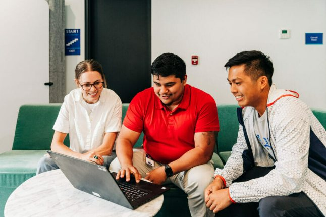
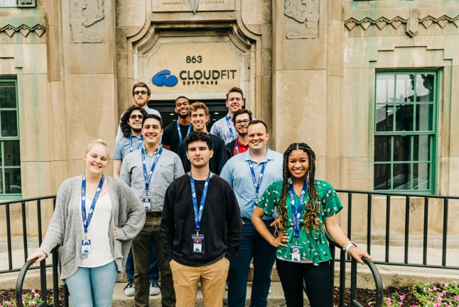
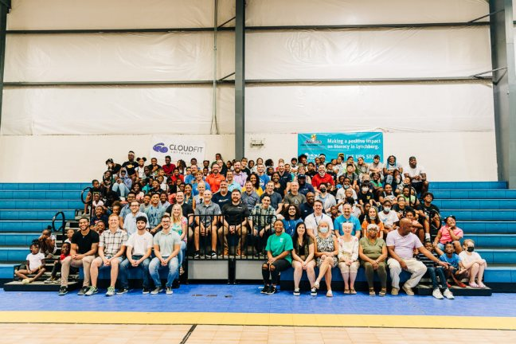

Early exploration for high school learners
In partnership with local academies and colleges, students explore cybersecurity, software, IT support, and design to discover where they fit best.
Multiple pathways. One support system.
JobFit is focused on teaching high school students, college students, and career changers professionalism and job-ready skills. We use a person's desire to learn and willingness to work hard to equip them with job-ready skills.
JobFit combines exploration, real project work, and career coaching so learners can move from curiosity to confidence and job readiness.

JobFit was founded to bridge education and employment through practical, local career pathways that serve students and career changers first.
We align with local schools, colleges, workforce organizations, employers, and community partners to strengthen the talent pipeline for the region, not for a single company.
Students develop confidence, career clarity, and practical skills before and during internship opportunities.
JobFit internships are coordinated by JobFit and delivered across multiple host organizations as the network grows.
JobFit overview video
In partnership with local academies and colleges, students explore cybersecurity, software, IT support, and design to discover where they fit best.
JobFit delivers mentored internships with leading employers, nonprofit teams, and civic partners.
Capstone cohorts collaborate on scoped projects with industry and community stakeholders to build portfolio-level outcomes.
JobFit provides one-to-one coaching, resume preparation, interview support, and professional development, with guidance for ongoing career growth.
"[Interning] let me test whether software engineering was right for me. Working with C# and TypeScript gave me real-world context and confirmed this is the career I want."
"Vulnerability scanning, scripting, and incident response gave me practical cybersecurity experience. Teamwork, communication, and inclusivity were major parts of what made this internship so valuable."
"Working as an intern gave me real-world projects and access to knowledgeable professionals who helped me level up. The experience and environment gave me a strong boost on my road toward success in this field."
"As someone who has always loved technology, this internship deepened that passion. I gained real hands-on experience and saw how these opportunities can help learners at any starting point while also supporting the local community."
"I chose this internship to learn future-facing cloud work, and I also grew in leadership. Managing team responsibilities and contributing in a lively environment made me feel part of something bigger than myself."
"Our capstone team rotated project manager responsibilities, worked with clients, and delivered a real-world solution using tools like C#. We had supportive guidance while still being hands-off enough to learn by doing."
"I entered as a career changer from a different world than tech, and JobFit gave me the opportunity, skills, and support to break into software engineering. That growth eventually led to full-time work and the chance to coach others."
"I came from public health with limited tech background, and this internship gave me hands-on experience plus mentorship that changed my career direction and continued into full-time work."


JobFit partners with schools, colleges, workforce organizations, employers, and community partners that each contribute distinct mentorship, project access, and learning opportunities.
Partner logos, website links, and the complete current inventory are awaiting confirmation.